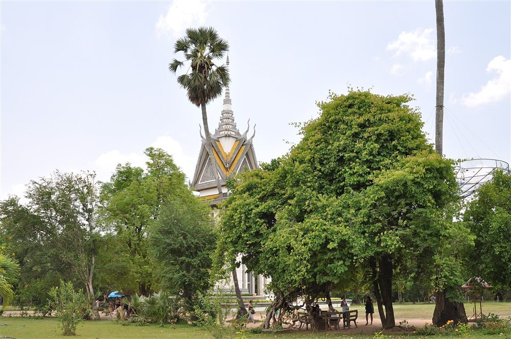
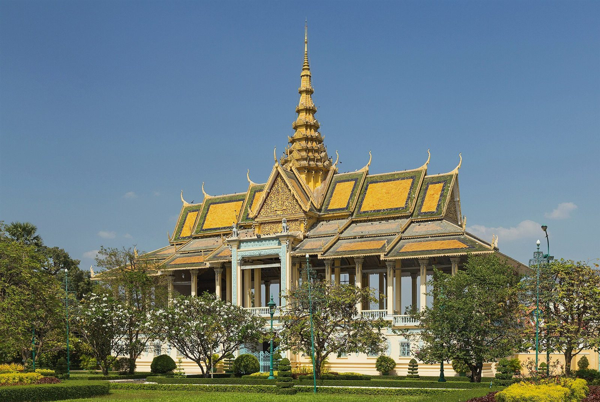
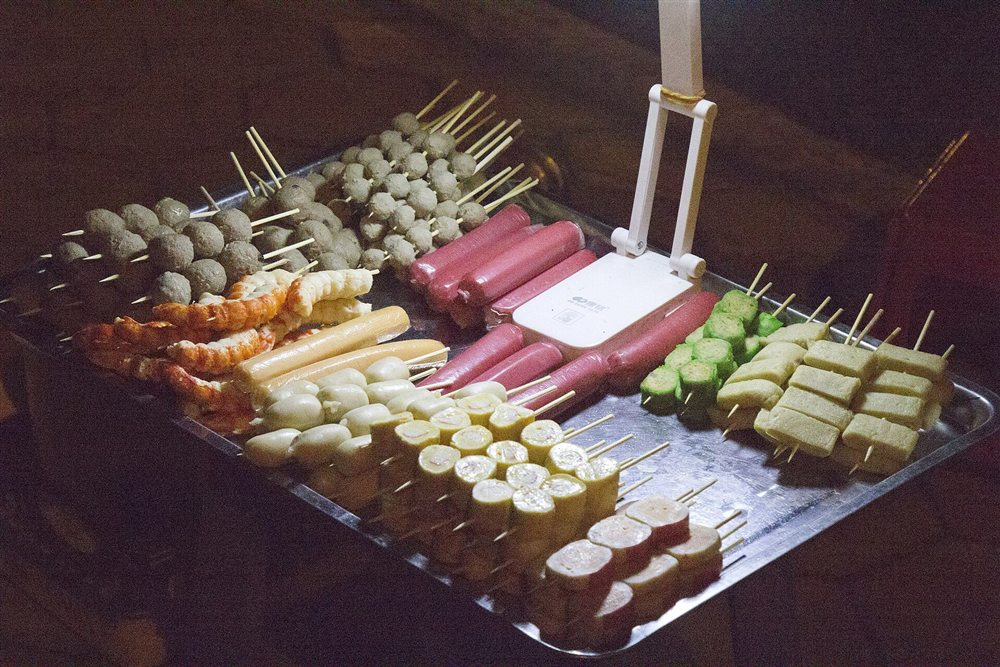
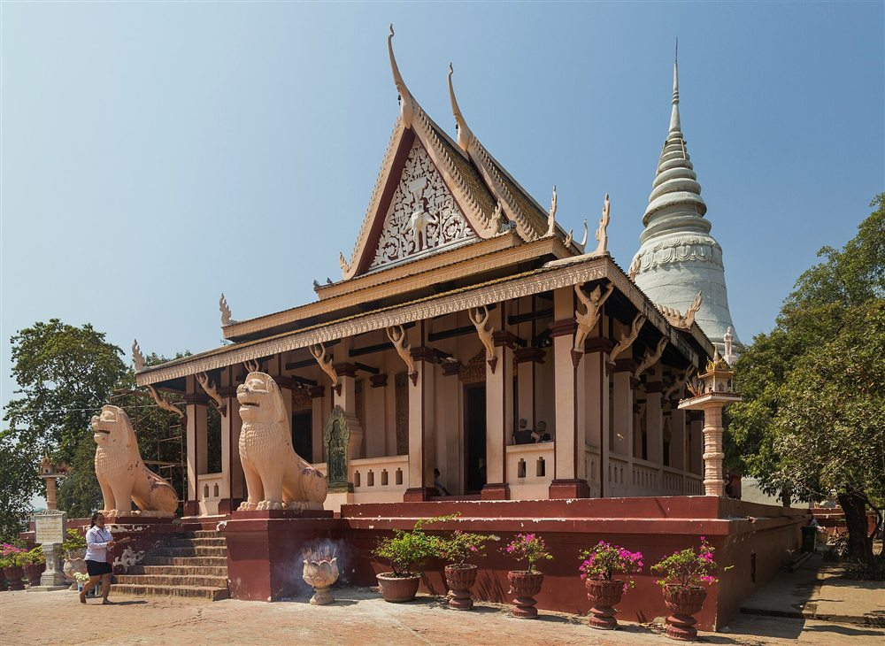
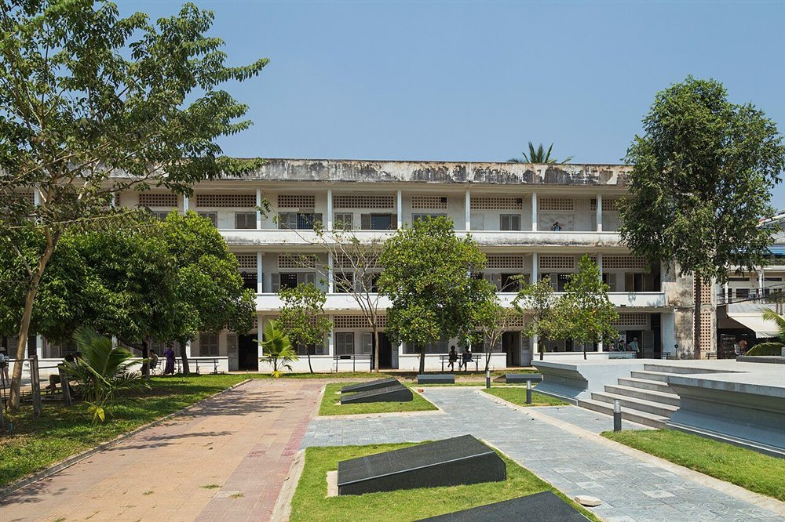
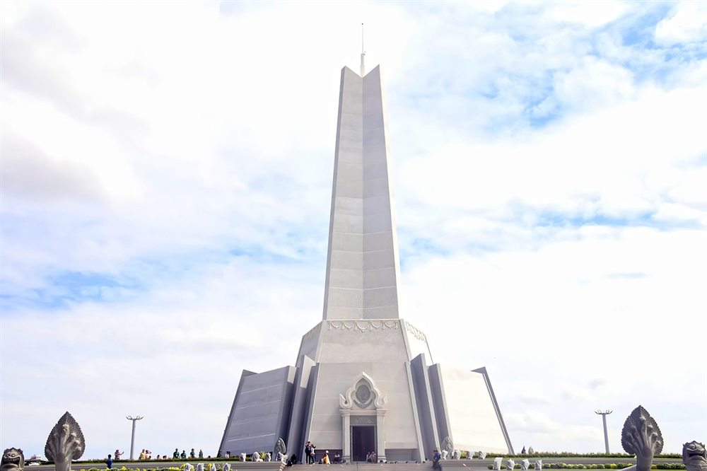
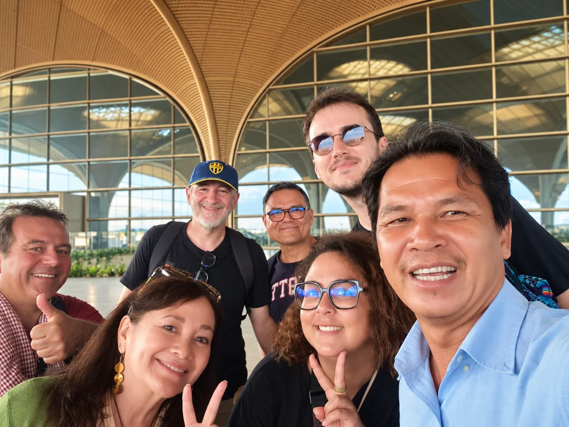
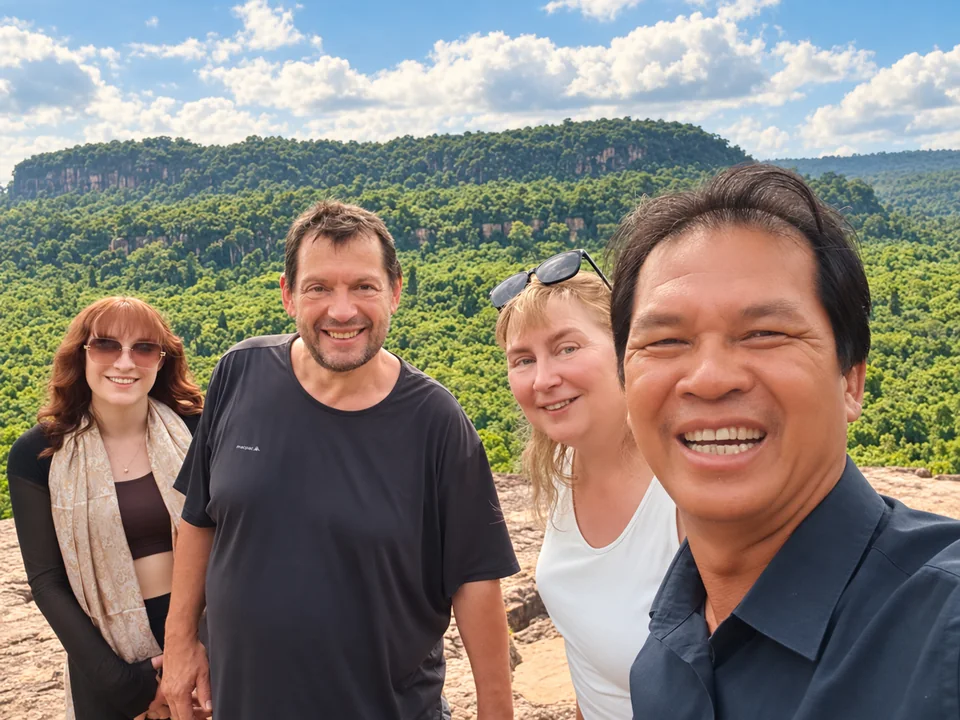

HISTORY & HERITAGEKilling Field Tour
A thoughtful visit to Tuol Sleng and Choeung Ek, with space to listen, learn, and remember.
$20 / person

Beyond the landmarks, there’s a story.
Discover Phnom Penh with a local who knows it by heart.
Locally guidedA personal look at Cambodia
English-speakingGood stories, easy conversation
Hotel pick-up & drop-offWe make getting around easy
Your trip, your paceFlexible private experiences
Understand the history. Feel the city’s rhythm.
Share something delicious. Find your kind of day.

HISTORY & HERITAGEA thoughtful visit to Tuol Sleng and Choeung Ek, with space to listen, learn, and remember.
$20 / person
Golden palace roofs, peaceful temples, and the stories that shaped Cambodia’s capital.
$30 / person

TASTE THE LOCAL LIFEStart with hotel pickup by TukTuk at 5:30 PM and discover Cambodian traditional dishes and street food.
Contact for Quote
A city to discover, a local to show you around. Let’s find the right tour for you.
From royal traditions to places of remembrance,
see the capital with a deeper understanding.
Golden rooftops and graceful Khmer architecture.




Each tour has its own stops. Ask us about adding the Victory Monument to a private itinerary.
An airport welcome, a day of meetings, or a family holiday across Cambodia. Let us help with the getting there.
$25 / transfer
$30 / transfer

Your first hello in Cambodia.A local at the wheel.English-speaking drivers for private, business, and research trips.
Private transfers from Phnom Penh and longer family holidays.
A few happy moments from the Rabbit Travel photo album.
Real guests, shared stories, and memories made in Cambodia.
From our own traveler album

Rabbit Travel Cambodia brings a personal touch to exploring Phnom Penh. It’s about more than moving between sights: it’s the conversation on the way, a new flavor, and time to take it all in.
With local knowledge, English-speaking guidance, and help with transport, we make room for the experiences that matter to you.
Explore with an English-speaking local guide and plan a day around your interests.
Plan Your TripFuture profile links or booking connections with these travel platforms may be explored, subject to their available options and approval. These are connection possibilities, not active integrations.
Have a tour in mind? Need a ride from the airport?
Tell us a little about your plans.
Phnom Penh, Cambodia
History, city highlights & local food
Airport transfers & journeys across Cambodia
Prepare your trip details below, then save your inquiry to share with your guide.